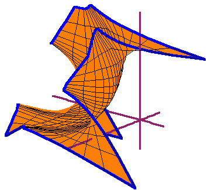
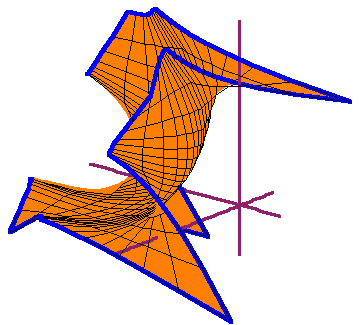

This is a tutorial on some aspects of toric varieties related to their
potential use in geometric modeling.
We discuss projective toric varieties and their ideals, as well as real
toric varieties and the moment map.
In particular, we explain the relation between linear precision and the moment
map.
This builds on the introduction to toric varieties by David Cox:
What is a
Toric Variety?.
